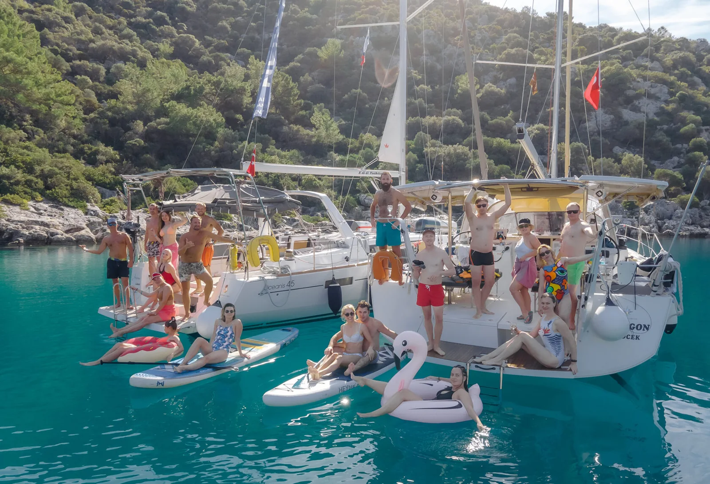
01Водный спорт
Водный спорт
и активности
Собственный SUP-борд для исследования тихих бухт и удочки для утренней рыбалки.
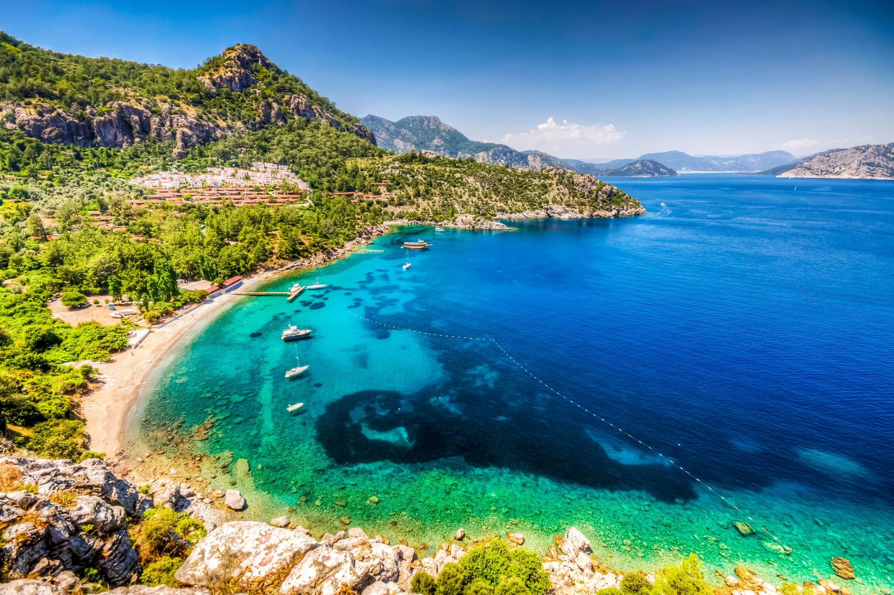
Незабываемое путешествие по Турецкому побережью
из Мармариса на комфортабельной парусной яхте.
Ваш идеальный отпуск начинается здесь.
ОКТЯБРЬ — НОЯБРЬ 2026
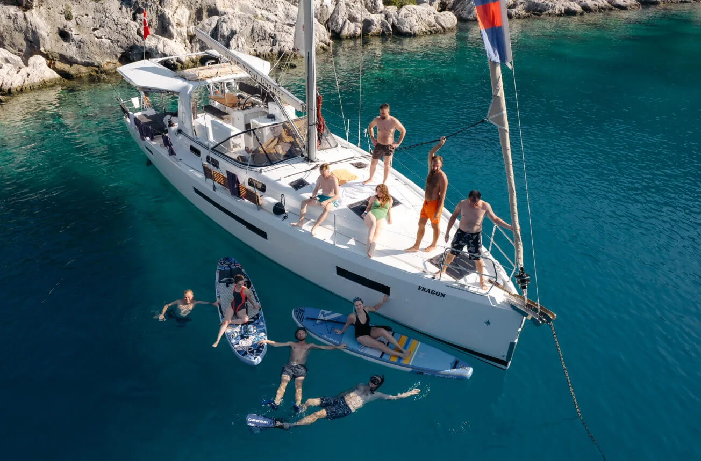
Море. Свобода. Ваша компания.01 / ВАШЕ ПУТЕШЕСТВИЕ
Уединённые бухты с кристально чистой водой, роскошные марины и незабываемые закаты в открытом море. Это доступная роскошь для вашей компании.
02 / ЖИЗНЬ НА БОРТУ
Своя каюта, утренний кофе на палубе
и новый вид за бортом каждый день.
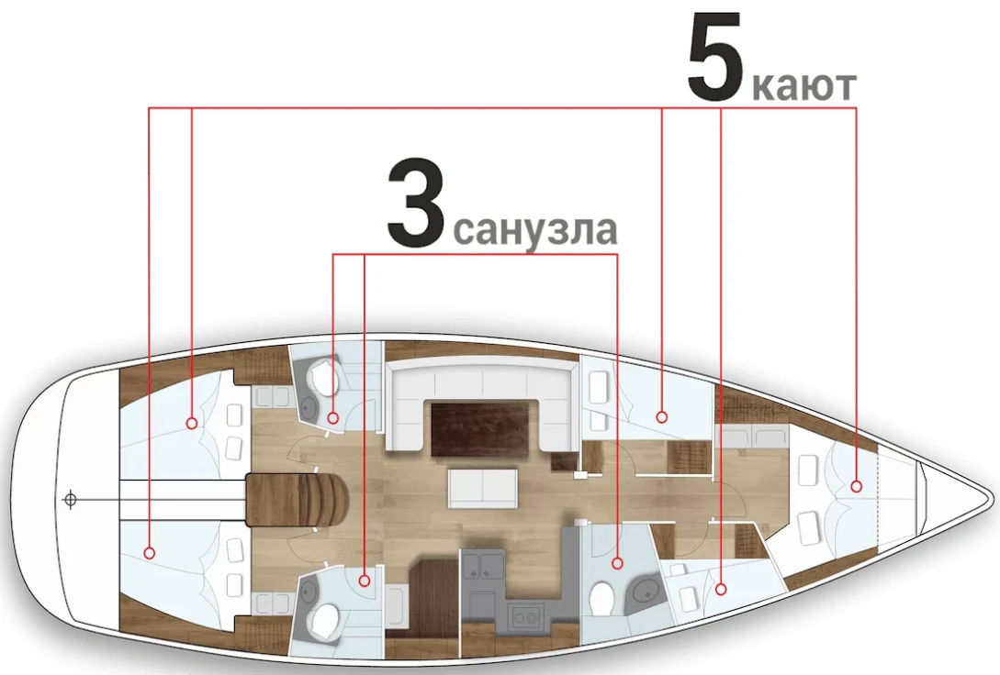
Просторная кают-компания для общих завтраков и вечеров. Оборудованная кухня: плита, холодильник и полный набор посуды. Санузлы с душем.
Размещение в каютах и состав компании согласуем при бронировании.
03 / КОМФОРТ И ВПЕЧАТЛЕНИЯ

Собственный SUP-борд для исследования тихих бухт и удочки для утренней рыбалки.
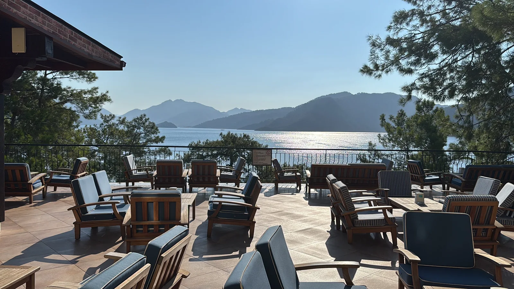
Полностью оборудованная кухня внутри и газовый гриль на палубе для приготовления свежего улова на закате.
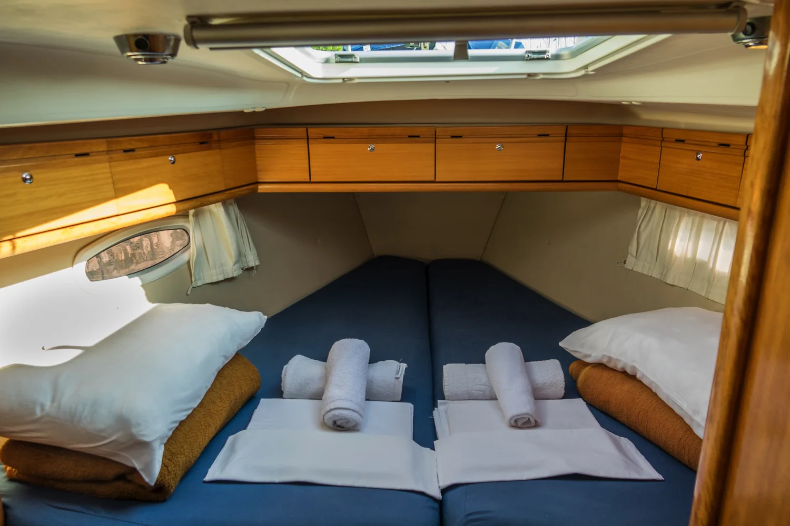
Постельное бельё и полотенца включены. Для высадки на дикие берега и к ресторанам предусмотрена надувная лодка.
04 / ВДОЛЬ ТУРЕЦКОЙ РИВЬЕРЫ
Программа гибкая: мы можем задержаться
в любой полюбившейся вам бухте.
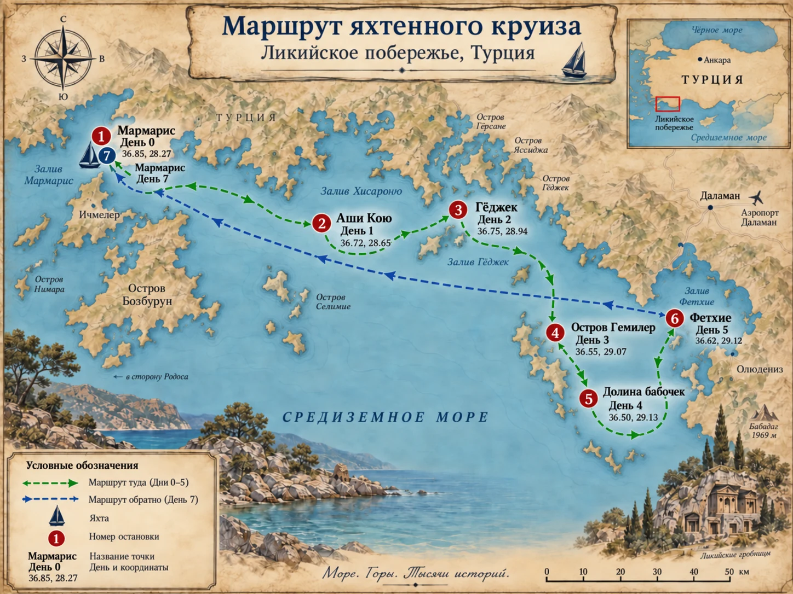
День первый · Мармарис. Встречаемся в домашней марине, знакомимся с яхтой и готовимся к путешествию. Порядок стоянок может меняться с учётом погоды.
ПУТЕШЕСТВИЕ ДЕНЬ ЗА ДНЁМ
От первого якоря до огней Мармариса.
Все дни путешествия и варианты остановок.
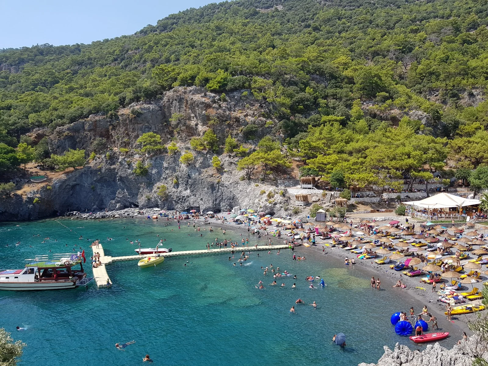
ДЕНЬ 01ASI KOYU
Покидаем домашнюю марину Мармариса. Берём курс на уютную якорную стоянку у Аши Кою. Высадка на берег на надувной лодке для первого ужина у воды.
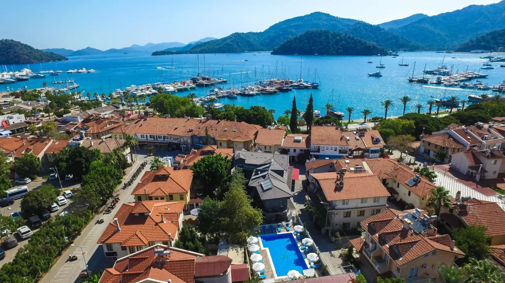
ДЕНЬ 02GÖCEK
Прогулка по традиционному турецкому городку. Погружение в местный колорит, шопинг в аутентичных лавках и купание в кристально чистой бирюзовой воде.
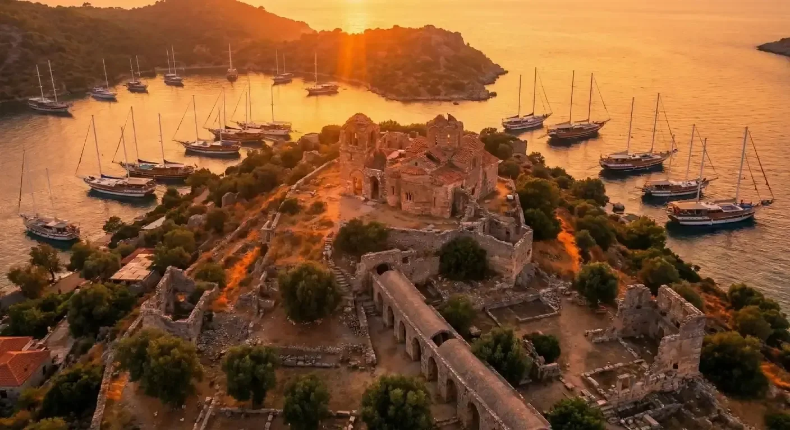
ДЕНЬ 03GEMILER ISLAND
Стоянка у берегов с древними руинами и потрясающими панорамными видами на закат.
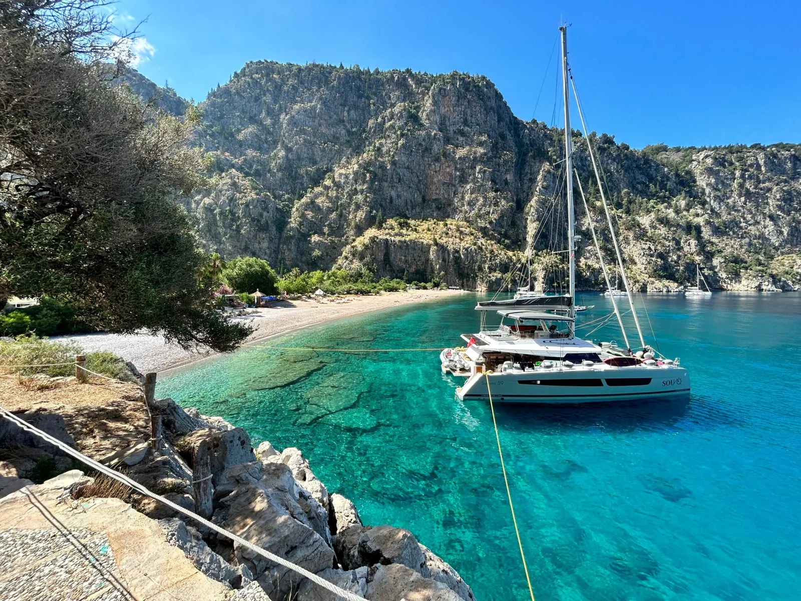
ДЕНЬ 04KELEBEKLER VADISI
Уединённая бухта, чистейшая вода и время для снорклинга. По желанию можно сменить обстановку и провести ночь в береговом бунгало с турецким завтраком.
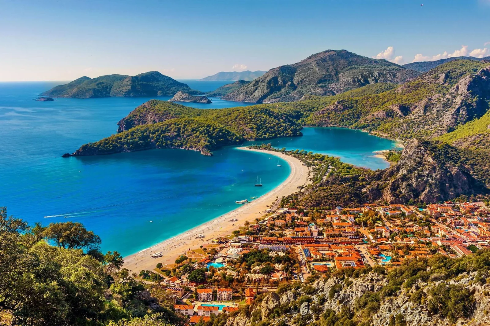
ДЕНЬ 05ФЕТХИЕ
Стоянка у города Фетхие. Отличная стартовая точка для похода по знаменитой Ликийской тропе.
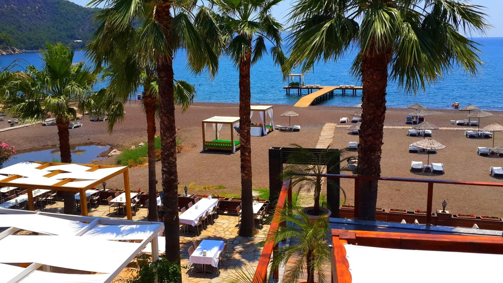
ДЕНЬ 06ЭКИНДЖИК
Заход в Экинджик. По желанию — экскурсия по реке Дальян со швартовкой у ресторана. Стоимость уточняем отдельно.
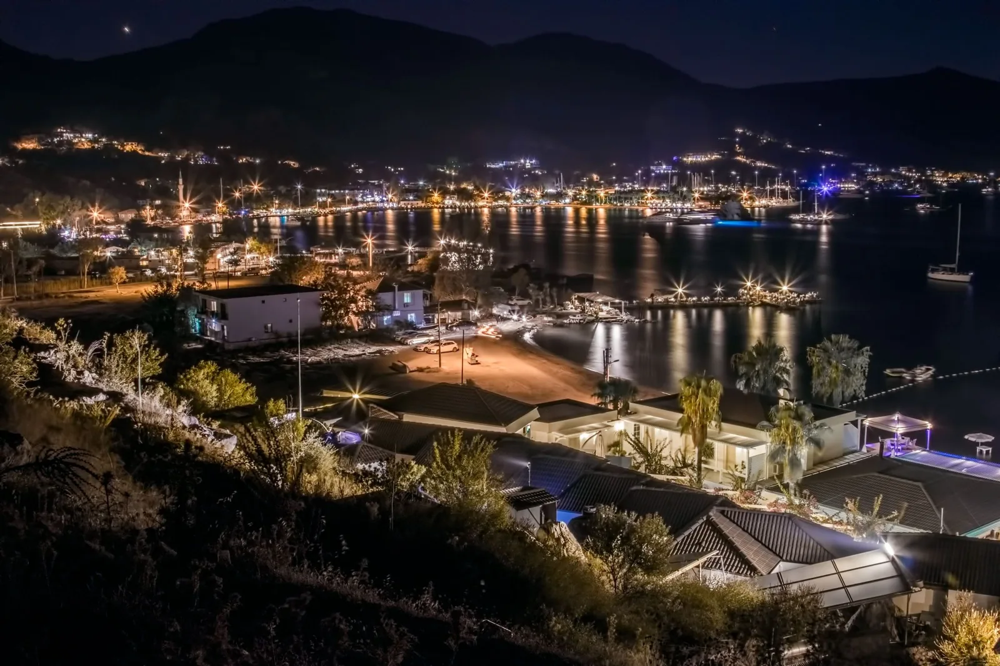
ДЕНЬ 07МАРМАРИС
Последняя стоянка с видом на вечерний Мармарис, прощальный закат на борту. Сдача лодки на 7-й день или продление каникул.
05 / ВАШИ ПЛАНЫ НА ОСЕНЬ
Четыре отправления из Мармариса.
Выберите даты и уточните наличие мест.
МЕСТО В КАЮТЕ
при бронировании
за неделю путешествия
Выбраны даты: 24.10–31.10
Уточнить наличие мест Напишите нам в WhatsAppПо прибытии: топливо, продукты питания, стоянки и уборка.
С человека за сохранность лодки. Возвращается при отсутствии повреждений.
600 € + 200 € + 200 € = 1 000 € на человека. Из этой суммы 200 € — возвратный депозит.
Перелёт оплачивается отдельно. Билеты из Санкт-Петербурга — от 44 000 ₽. Стоимость билетов уточняется на выбранные даты.
06 / ДОРОГА К МОРЮ
Поможем подобрать перелёт и спланировать дорогу до яхты в Мармарисе.
Ближайший аэропорт. До Мармариса можно добраться прямым автобусом или согласовать трансфер.
Альтернативный вариант. Дорога до Мармариса занимает около 5 часов на автобусе по живописной трассе.
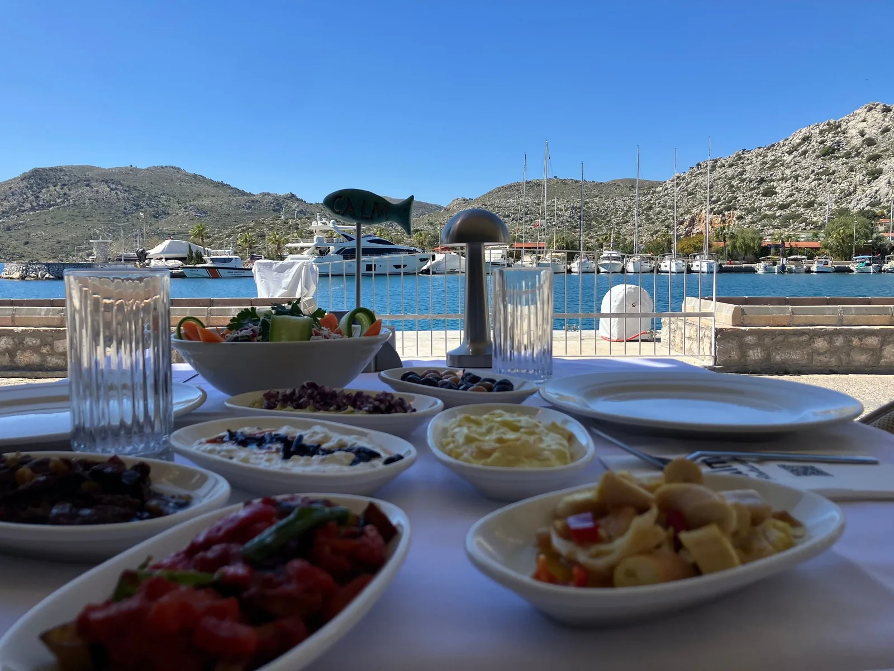
07 / ВКУС ПУТЕШЕСТВИЯ
Закупаем свежайшие продукты на местных рынках и в супермаркетах Migros и Bim. Готовим на полноценной кухне или жарим барбекю на палубном гриле.
В бухтах нас ждут прибрежные таверны, потрясающие виды и турецкая кухня: от классических кебабов до свежей рыбы.
08 / КАПИТАН РЯДОМ
Опытный и дружелюбный капитан
сделает ваш отдых беззаботным.
Помощь с местной SIM-картой и консультация по оформлению турецкой банковской карты.
Персональные консультации по страховке и трансферу до яхты.
По желанию — знакомство с азами управления яхтой и работой с парусами.
Если захотите продлить отдых, капитан подскажет маршрут по Ликийской тропе и любимые места на побережье.
ВАШЕ ПУТЕШЕСТВИЕ НАЧИНАЕТСЯ ЗДЕСЬ
Напишите нам: подберём даты, расскажем о яхте
и ответим на вопросы о путешествии.
Дружелюбие и обучение базовым навыкам от шкипера — приятная часть вашего отпуска.